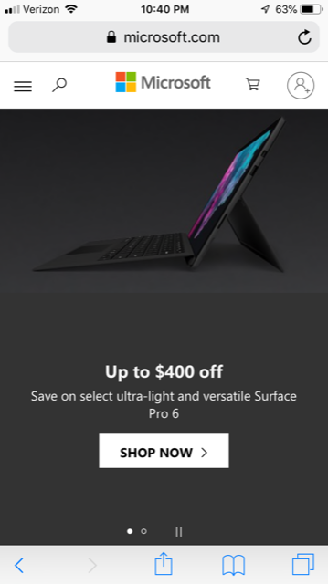

CIT230 Assignment Portal
Visual Hierarchy
Walmart
Walmart really shows the idea of visual hierarchy through its use of color. The dark blue of the nav bar catches a visitor's attention first, after which they move to the lighter blue of the ad display. Finally, the clean white space of the remaining webpage catches their attention.
Rule of Thirds
Amazon
To be fair, both Walmart and Amazon use the rule of thirds from the first moment of their webpage loading, but I feel Amazon does it better. The nav bar is a good bit bigger, and the ad space is a good bit smaller
White Space and Clean Design
Microsoft
Microsoft's current website is a good use of white space and clean design, but in a roundabout way. Microsoft's website isn't using white space, but black space. It has the same effect of focusing the viewer's attention and not feeling cluttered, but the black color gives it more energy.